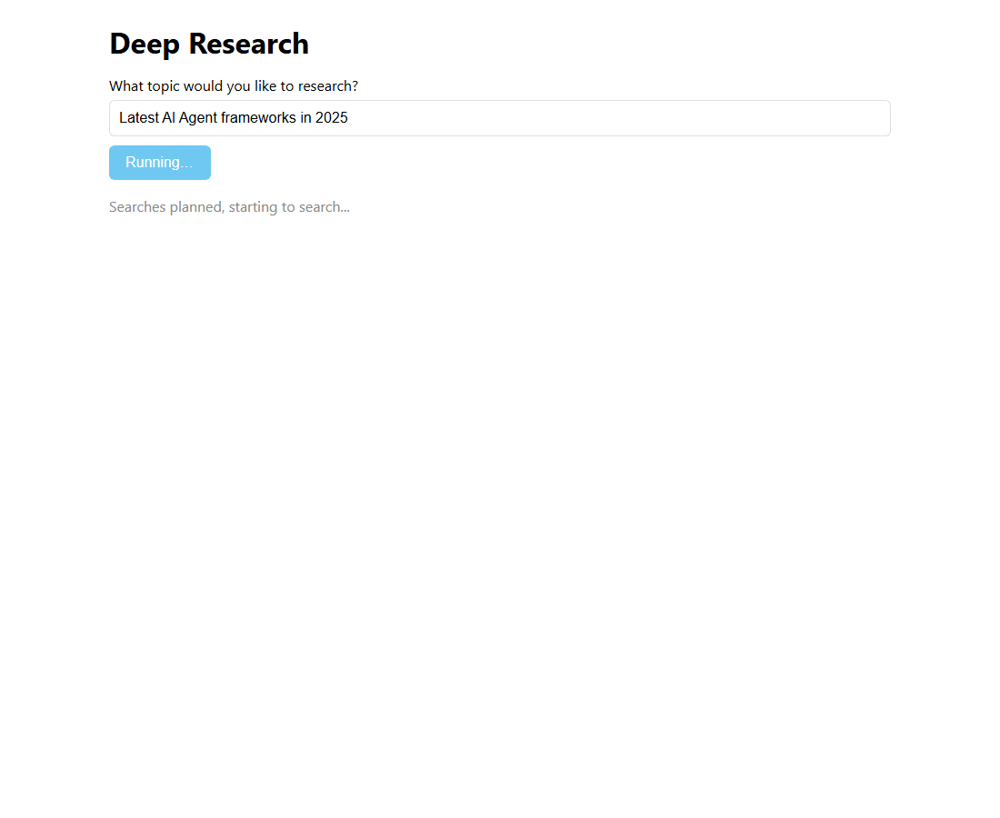
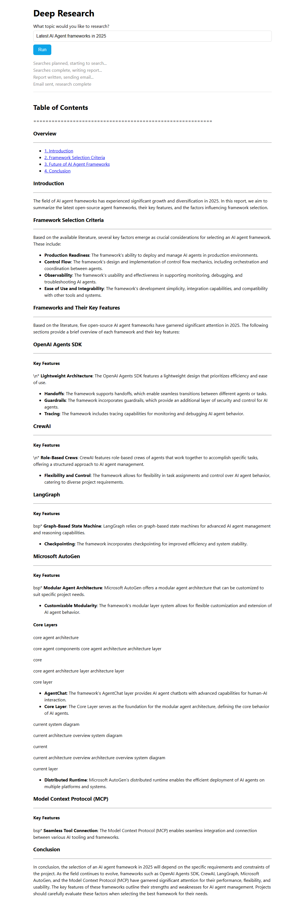

Week 2 Day 5 · Deep research as an app
The notebook becomes Python modules with a generator-based ResearchManager and a Gradio UI; in TypeScript, a Hono API and a React app.
Course lectures (Udemy) · code verified against the repoWhat this day builds
"Good news and bad news" (lecture 19, 00:00). The good news: the deep-research agent from Day 4 becomes proper Python modules with a Gradio user interface, and it is "quick and easy and satisfying". The bad news: the week ends with a hard challenge. The presenter's method, repeated as "one more sales pitch": experiment in a notebook first, then move to modules "as you've built out your prompts, as you've experimented and refined your agent architecture".
The TypeScript version replaces Gradio with two pieces you would use in a real web project: a small Hono API (server/index.ts) that streams progress with Server-Sent Events, and a React app (web/, built with Vite). The agents and the manager are the same files as Day 4. This guide built the app, ran it with a local model and drove it in a headless browser; the screenshots below are from that run.
| Lecture | Length | What happens |
|---|---|---|
| 19 · Modular research system with Gradio | 12:26 | The five modules; the planner's search count; adding search_context_size="low" live; the generator-based ResearchManager; gr.Blocks explained; a variable renamed live. |
| 20 · Run the Gradio app | 3:36 | uv run deep_research.py; a question about commercial applications of agentic AI; status lines appear; 20 searches; the report renders as markdown; the trace. |
| 21 · The big challenge | 3:59 | Clarifying questions, an autonomous manager, evaluator–optimizer, deploy with gradio deploy; see you in CrewAI week. |
The agent modules (lecture 19, 01:18–04:38)
Each agent gets a file with "a single agent class". They are the Day 4 cells with two edits made on camera. In planner_agent.py the presenter finds HOW_MANY_SEARCHES = 20 from his last demo and says he will set it back to 3 before committing "so that no one racks up a big bill"; the repo you have has 5. In search_agent.py he notices the tool lacks the cost parameter and adds search_context_size="low" live by copying it from the notebook. The writer and email modules are unchanged apart from the reminder to replace the two email addresses "not me".
from pydantic import BaseModel, Field
from agents import Agent
HOW_MANY_SEARCHES = 5
INSTRUCTIONS = f"You are a helpful research assistant. Given a query, come up with a set of web searches \
to perform to best answer the query. Output {HOW_MANY_SEARCHES} terms to query for."
class WebSearchItem(BaseModel):
reason: str = Field(description="Your reasoning for why this search is important to the query.")
query: str = Field(description="The search term to use for the web search.")
class WebSearchPlan(BaseModel):
searches: list[WebSearchItem] = Field(description="A list of web searches to perform to best answer the query.")
planner_agent = Agent(
name="PlannerAgent",
instructions=INSTRUCTIONS,
model="gpt-4o-mini",
output_type=WebSearchPlan,
)from agents import Agent, WebSearchTool, ModelSettings
INSTRUCTIONS = (
"You are a research assistant. Given a search term, you search the web for that term and "
"produce a concise summary of the results. The summary must 2-3 paragraphs and less than 300 "
"words. Capture the main points. Write succintly, no need to have complete sentences or good "
"grammar. This will be consumed by someone synthesizing a report, so its vital you capture the "
"essence and ignore any fluff. Do not include any additional commentary other than the summary itself."
)
search_agent = Agent(
name="Search agent",
instructions=INSTRUCTIONS,
tools=[WebSearchTool(search_context_size="low")],
model="gpt-4o-mini",
model_settings=ModelSettings(tool_choice="required"),
)Compared with the notebook cells, only the imports and the top-level constants differ: each module imports what it needs from agents and pydantic, and exports its agent (and schema classes) for research_manager.py to import.
from pydantic import BaseModel, Field
from agents import Agent
INSTRUCTIONS = (
"You are a senior researcher tasked with writing a cohesive report for a research query. "
"You will be provided with the original query, and some initial research done by a research assistant.\n"
"You should first come up with an outline for the report that describes the structure and "
"flow of the report. Then, generate the report and return that as your final output.\n"
"The final output should be in markdown format, and it should be lengthy and detailed. Aim "
"for 5-10 pages of content, at least 1000 words."
)
class ReportData(BaseModel):
short_summary: str = Field(description="A short 2-3 sentence summary of the findings.")
markdown_report: str = Field(description="The final report")
follow_up_questions: list[str] = Field(description="Suggested topics to research further")
writer_agent = Agent(
name="WriterAgent",
instructions=INSTRUCTIONS,
model="gpt-4o-mini",
output_type=ReportData,
)import os
from typing import Dict
import sendgrid
from sendgrid.helpers.mail import Email, Mail, Content, To
from agents import Agent, function_tool
@function_tool
def send_email(subject: str, html_body: str) -> Dict[str, str]:
"""Send an email with the given subject and HTML body"""
sg = sendgrid.SendGridAPIClient(api_key=os.environ.get("SENDGRID_API_KEY"))
from_email = Email("ed@edwarddonner.com") # put your verified sender here
to_email = To("ed.donner@gmail.com") # put your recipient here
content = Content("text/html", html_body)
mail = Mail(from_email, to_email, subject, content).get()
response = sg.client.mail.send.post(request_body=mail)
print("Email response", response.status_code)
return "success"
INSTRUCTIONS = """You are able to send a nicely formatted HTML email based on a detailed report.
You will be provided with a detailed report. You should use your tool to send one email, providing the
report converted into clean, well presented HTML with an appropriate subject line."""
email_agent = Agent(
name="Email agent",
instructions=INSTRUCTIONS,
tools=[send_email],
model="gpt-4o-mini",
)Video vs repo. Planner: 20 in the video, 5 in the repo (and 3 in the notebook). Email agent: the repo prints Email response 202 after sending (print("Email response", response.status_code)), which you can see in the video's terminal output at lecture 20, 02:02. The comments on the two addresses read "put your verified sender here" / "put your recipient here".
In TypeScript all four agents share one module, src/deep_research/agents.ts, already shown piece by piece on Day 4. The complete file:
// The four agents of the deep-research app (TypeScript version of 2_openai/deep_research/*_agent.py)
import { Agent, tool, webSearchTool } from "@openai/agents";
import { z } from "zod";
import { LOCAL, MODEL, sendEmail } from "../setup.js";
export const HOW_MANY_SEARCHES = Number(process.env.HOW_MANY_SEARCHES ?? 3);
// ---------- search agent ----------
const SEARCH_INSTRUCTIONS =
"You are a research assistant. Given a search term, you search the web for that term and " +
"produce a concise summary of the results. The summary must 2-3 paragraphs and less than 300 " +
"words. Capture the main points. Write succintly, no need to have complete sentences or good " +
"grammar. This will be consumed by someone synthesizing a report, so its vital you capture the " +
"essence and ignore any fluff. Do not include any additional commentary other than the summary itself.";
// OpenAI's hosted web search only exists on OpenAI's own API. In local mode a function tool stands in for it
// with canned text, so the whole pipeline (plan → search in parallel → write → email) still runs offline.
const localSearch = tool({
name: "web_search",
description: "Search the web for the query and return a short summary of the results (offline stand-in).",
parameters: z.object({ query: z.string() }),
execute: async ({ query }) => {
console.log(`[web_search stand-in] ${query}`);
return (
"Search results (canned, offline test data): several open-source agent frameworks were widely discussed in 2025: " +
"OpenAI Agents SDK (lightweight, handoffs, guardrails, tracing), CrewAI (role-based crews of agents with tasks), " +
"LangGraph (graph-based state machines with checkpointing), Microsoft AutoGen (AgentChat and Core layers, " +
"distributed runtime) and the Model Context Protocol (MCP) for connecting tools. Articles compared ease of use, " +
"control flow, observability and production readiness."
);
},
});
export const searchAgent = new Agent({
name: "Search agent",
instructions: SEARCH_INSTRUCTIONS,
tools: [LOCAL ? localSearch : webSearchTool({ searchContextSize: "low" })],
model: MODEL,
modelSettings: { toolChoice: "required" },
});
// ---------- planner agent (structured output) ----------
export const WebSearchItem = z.object({
reason: z.string().describe("Your reasoning for why this search is important to the query."),
query: z.string().describe("The search term to use for the web search."),
});
export const WebSearchPlan = z.object({
searches: z.array(WebSearchItem).describe("A list of web searches to perform to best answer the query."),
});
export type WebSearchItem = z.infer<typeof WebSearchItem>;
export type WebSearchPlan = z.infer<typeof WebSearchPlan>;
export const plannerAgent = new Agent({
name: "PlannerAgent",
instructions:
"You are a helpful research assistant. Given a query, come up with a set of web searches " +
`to perform to best answer the query. Output ${HOW_MANY_SEARCHES} terms to query for.`,
model: MODEL,
outputType: WebSearchPlan,
});
// ---------- writer agent (structured output) ----------
export const ReportData = z.object({
short_summary: z.string().describe("A short 2-3 sentence summary of the findings."),
markdown_report: z.string().describe("The final report"),
follow_up_questions: z.array(z.string()).describe("Suggested topics to research further"),
});
export type ReportData = z.infer<typeof ReportData>;
export const writerAgent = new Agent({
name: "WriterAgent",
instructions:
"You are a senior researcher tasked with writing a cohesive report for a research query. " +
"You will be provided with the original query, and some initial research done by a research assistant.\n" +
"You should first come up with an outline for the report that describes the structure and " +
"flow of the report. Then, generate the report and return that as your final output.\n" +
"The final output should be in markdown format, and it should be lengthy and detailed. Aim " +
"for 5-10 pages of content, at least 1000 words.",
model: MODEL,
outputType: ReportData,
});
// ---------- email agent (function tool) ----------
const sendEmailTool = tool({
name: "send_email",
description: "Send an email with the given subject and HTML body",
parameters: z.object({ subject: z.string(), html_body: z.string() }),
execute: async ({ subject, html_body }) => sendEmail(subject, html_body, "text/html"),
});
export const emailAgent = new Agent({
name: "Email agent",
instructions:
"You are able to send a nicely formatted HTML email based on a detailed report.\n" +
"You will be provided with a detailed report. You should use your tool to send one email, providing the " +
"report converted into clean, well presented HTML with an appropriate subject line.",
tools: [sendEmailTool],
model: MODEL,
});Line 6 reads HOW_MANY_SEARCHES from the environment with a default of 3, so you can run HOW_MANY_SEARCHES=20 pnpm lab4 for a deeper report without editing code.
The manager as a generator (lecture 19, 04:38–06:45)
ResearchManager is a class with the five functions as methods "with a little bit of a twist". The twist is in run: it is an async def that yields. "We're treating this as a generator that is going to yield various bits of text along the way": a trace link first, then one status line after each stage, and finally the markdown report itself. Why will become clear with Gradio. The other methods are the Day 4 functions "beefed up": type hints "as one should do for proper checked-in Python modules", a try/except in search so one failed search returns None instead of killing the run, and a progress loop in perform_searches with asyncio.as_completed so it can print "Searching... 2/20 completed".
from agents import Runner, trace, gen_trace_id
from search_agent import search_agent
from planner_agent import planner_agent, WebSearchItem, WebSearchPlan
from writer_agent import writer_agent, ReportData
from email_agent import email_agent
import asyncio
class ResearchManager:
async def run(self, query: str):
""" Run the deep research process, yielding the status updates and the final report"""
trace_id = gen_trace_id()
with trace("Research trace", trace_id=trace_id):
print(f"View trace: https://platform.openai.com/traces/trace?trace_id={trace_id}")
yield f"View trace: https://platform.openai.com/traces/trace?trace_id={trace_id}"
print("Starting research...")
search_plan = await self.plan_searches(query)
yield "Searches planned, starting to search..."
search_results = await self.perform_searches(search_plan)
yield "Searches complete, writing report..."
report = await self.write_report(query, search_results)
yield "Report written, sending email..."
await self.send_email(report)
yield "Email sent, research complete"
yield report.markdown_report
async def plan_searches(self, query: str) -> WebSearchPlan:
""" Plan the searches to perform for the query """
print("Planning searches...")
result = await Runner.run(
planner_agent,
f"Query: {query}",
)
print(f"Will perform {len(result.final_output.searches)} searches")
return result.final_output_as(WebSearchPlan)
async def perform_searches(self, search_plan: WebSearchPlan) -> list[str]:
""" Perform the searches to perform for the query """
print("Searching...")
num_completed = 0
tasks = [asyncio.create_task(self.search(item)) for item in search_plan.searches]
results = []
for task in asyncio.as_completed(tasks):
result = await task
if result is not None:
results.append(result)
num_completed += 1
print(f"Searching... {num_completed}/{len(tasks)} completed")
print("Finished searching")
return results
async def search(self, item: WebSearchItem) -> str | None:
""" Perform a search for the query """
input = f"Search term: {item.query}\nReason for searching: {item.reason}"
try:
result = await Runner.run(
search_agent,
input,
)
return str(result.final_output)
except Exception:
return None
async def write_report(self, query: str, search_results: list[str]) -> ReportData:
""" Write the report for the query """
print("Thinking about report...")
input = f"Original query: {query}\nSummarized search results: {search_results}"
result = await Runner.run(
writer_agent,
input,
)
print("Finished writing report")
return result.final_output_as(ReportData)
async def send_email(self, report: ReportData) -> None:
print("Writing email...")
result = await Runner.run(
email_agent,
report.markdown_report,
)
print("Email sent")
return report// ResearchManager (TypeScript version of 2_openai/deep_research/research_manager.py)
// An async generator: Python "yield" status strings become "yield" in an async function*; the UI consumes them.
import { run, withTrace, getGlobalTraceProvider } from "@openai/agents";
import { emailAgent, plannerAgent, searchAgent, writerAgent, type ReportData, type WebSearchItem, type WebSearchPlan } from "./agents.js";
import { LOCAL } from "../setup.js";
export class ResearchManager {
/** Run the deep research process, yielding status updates and the final report */
async *run(query: string): AsyncGenerator<string> {
const traceId = getGlobalTraceProvider().generateTraceId();
const updates: string[] = [];
let report: ReportData | undefined;
// withTrace wraps the whole workflow in one trace; the generator yields what the workflow records
const work = withTrace("Research trace", async () => {
if (!LOCAL) updates.push(`View trace: https://platform.openai.com/traces/trace?trace_id=${traceId}`);
console.log("Starting research...");
const plan = await this.planSearches(query);
updates.push("Searches planned, starting to search...");
const results = await this.performSearches(plan);
updates.push("Searches complete, writing report...");
report = await this.writeReport(query, results);
updates.push("Report written, sending email...");
await this.sendEmail(report);
updates.push("Email sent, research complete");
}, { traceId });
// drain updates while the work runs, so the UI sees progress as it happens
let done = false;
work.finally(() => (done = true));
let sent = 0;
while (!done || sent < updates.length) {
if (sent < updates.length) yield updates[sent++]!;
else await new Promise((r) => setTimeout(r, 100));
}
await work; // rethrow if the workflow failed
if (report) yield report.markdown_report;
}
/** Plan the searches to perform for the query */
async planSearches(query: string): Promise<WebSearchPlan> {
console.log("Planning searches...");
const result = await run(plannerAgent, `Query: ${query}`);
const plan = result.finalOutput!;
console.log(`Will perform ${plan.searches.length} searches`);
return plan;
}
/** Perform the searches for the plan, in parallel; report progress as each one completes */
async performSearches(plan: WebSearchPlan): Promise<string[]> {
console.log("Searching...");
let numCompleted = 0;
const tasks = plan.searches.map((item) =>
this.search(item).then((r) => {
numCompleted += 1;
console.log(`Searching... ${numCompleted}/${plan.searches.length} completed`);
return r;
}),
);
const results = (await Promise.all(tasks)).filter((r): r is string => r !== null);
console.log("Finished searching");
return results;
}
/** Perform one search; a failed search returns null instead of killing the whole run */
async search(item: WebSearchItem): Promise<string | null> {
const input = `Search term: ${item.query}\nReason for searching: ${item.reason}`;
try {
const result = await run(searchAgent, input);
return String(result.finalOutput);
} catch {
return null;
}
}
async writeReport(query: string, searchResults: string[]): Promise<ReportData> {
console.log("Thinking about report...");
const input = `Original query: ${query}\nSummarized search results: ${JSON.stringify(searchResults)}`;
const result = await run(writerAgent, input);
console.log("Finished writing report");
return result.finalOutput!;
}
async sendEmail(report: ReportData): Promise<ReportData> {
console.log("Writing email...");
await run(emailAgent, report.markdown_report);
console.log("Email sent");
return report;
}
}Line by line
| Line(s) | Code | What it does & why |
|---|---|---|
| 1–6 | from agents import Runner, trace, gen_trace_id / from search_agent import search_agent / … / import asyncio | Imports the SDK pieces and the four agents from the sibling modules. gen_trace_id makes a trace id you can print before the run. |
| 8–10 | class ResearchManager: / async def run(self, query: str): | A class so the UI can call ResearchManager().run(query). The presence of yield below makes run an async generator: calling it returns an object you iterate with async for. |
| 12–15 | trace_id = gen_trace_id() / with trace("Research trace", trace_id=trace_id): / print(f"View trace: …") / yield f"View trace: …" | Generating the id yourself lets you show the exact trace URL immediately. The first yield hands that line to whoever is iterating. |
| 16–24 | search_plan = await self.plan_searches(query) / yield "Searches planned, starting to search..." / … / yield "Email sent, research complete" | The Day 4 sequence with a status line yielded after each stage. Each yield pauses the method until the consumer asks for the next value. |
| 25 | yield report.markdown_report | The last value is the report itself; the UI shows whatever it received last. |
| 28–36 | async def plan_searches(self, query: str) -> WebSearchPlan: … return result.final_output_as(WebSearchPlan) | final_output_as(Type) is a typed accessor for the structured output; it also satisfies the type checker. |
| 38–51 | async def perform_searches(…): … tasks = [asyncio.create_task(self.search(item)) …] / for task in asyncio.as_completed(tasks): result = await task / if result is not None: results.append(result) / num_completed += 1 / print(f"Searching... {num_completed}/{len(tasks)} completed") | as_completed yields the tasks in finishing order, which lets the loop count progress; None results (failed searches) are skipped. |
| 53–63 | async def search(self, item: WebSearchItem) -> str | None: … try: … return str(result.final_output) / except Exception: return None | Defensive: a single bad search must not abort twenty. |
| 65–75 | async def write_report(…) -> ReportData: … return result.final_output_as(ReportData) | As on Day 4, typed. |
| 77–84 | async def send_email(self, report: ReportData) -> None: … return report | Runs the email agent. (The annotation says None but it returns the report; harmless.) |
Line by line (manager.ts)
| Line(s) | Code | What it does & why |
|---|---|---|
| 3–5 | import { run, withTrace, getGlobalTraceProvider } from "@openai/agents"; import { emailAgent, … } from "./agents.js"; import { LOCAL } from "../setup.js"; | The SDK, the four agents and schema types, and the local-mode flag. |
| 7–9 | export class ResearchManager { … async *run(query: string): AsyncGenerator<string> { | async function* syntax (here as a method, async *run) declares an async generator, Python's async def with yield. Consumers use for await. |
| 10 | const traceId = getGlobalTraceProvider().generateTraceId(); | The JS twin of gen_trace_id(). |
| 11–12 | const updates: string[] = []; let report: ReportData | undefined; | A queue of status lines and a slot for the report, filled by the work below. |
| 14–25 | const work = withTrace("Research trace", async () => { … updates.push("Searches planned, starting to search..."); … }, { traceId }); | The pipeline runs inside one trace with the pre-generated id. Because withTrace takes a callback, the method cannot yield from inside it (a generator cannot yield from a nested function), so each stage pushes its status line into the queue instead. |
| 27–33 | let done = false; work.finally(() => (done = true)); … while (!done || sent < updates.length) { if (sent < updates.length) yield updates[sent++]!; else await new Promise((r) => setTimeout(r, 100)); } | Drains the queue while the work runs: yield a line when there is one, otherwise sleep 100 ms. This is what makes the UI update live. The trace link is only queued when not in local mode (line 15), since there is no trace to look at then. |
| 34–35 | await work; if (report) yield report.markdown_report; | Rethrows any error from the pipeline, then yields the report last, as Python does. |
| 39–87 | planSearches / performSearches / search / writeReport / sendEmail | Explained on Day 4. |
New to generators? Why yield instead of return
A function with return gives one value and is finished. A function with yield gives a value, pauses, and continues from the same place when asked for the next one; it can do this many times. That makes it ideal for progress: the research takes a minute, and instead of silence followed by a report, the caller receives "Searches planned…", "Searches complete…", and so on as they happen. Gradio understands this directly: when a callback is a generator, "Gradio will show that incrementally in the user interface, so that you don't have to sit there and wait for a long time and suddenly see an output" (lecture 19, 12:03). The async version works the same way but is iterated with async for (Python) or for await (TypeScript). The course's guides/10_intermediate_python.ipynb covers generators if the idea is new.
The Gradio app (lecture 19, 06:45–12:26)
Previous labs used gr.ChatInterface, "the super canned simple one". To build your own layout you use gr.Blocks: inside a with gr.Blocks(...) as ui: block you list components top to bottom, then register events, then ui.launch(). The presenter: "I'm not giving you a full Gradio lesson here… just have some general intuition for it." He also renames query to query_textbox while explaining, "it might be a bit clearer".
import gradio as gr
from dotenv import load_dotenv
from research_manager import ResearchManager
load_dotenv(override=True)
async def run(query: str):
async for chunk in ResearchManager().run(query):
yield chunk
with gr.Blocks(theme=gr.themes.Default(primary_hue="sky")) as ui:
gr.Markdown("# Deep Research")
query_textbox = gr.Textbox(label="What topic would you like to research?")
run_button = gr.Button("Run", variant="primary")
report = gr.Markdown(label="Report")
run_button.click(fn=run, inputs=query_textbox, outputs=report)
query_textbox.submit(fn=run, inputs=query_textbox, outputs=report)
ui.launch(inbrowser=True)Line by line
| Line(s) | Code | What it does & why |
|---|---|---|
| 1–5 | import gradio as gr / from dotenv import load_dotenv / from research_manager import ResearchManager / load_dotenv(override=True) | Gradio, the env file (the modules run as a script now, so the keys must be loaded here) and the manager. |
| 8–10 | async def run(query: str): / async for chunk in ResearchManager().run(query): / yield chunk | The callback Gradio will call. It is itself an async generator that forwards every chunk from the manager. "Normally with these callbacks you just return a result… but you can also have your callback functions be generators." |
| 13 | with gr.Blocks(theme=gr.themes.Default(primary_hue="sky")) as ui: | Starts the layout; the theme makes the primary button sky blue. |
| 14 | gr.Markdown("# Deep Research") | A heading. |
| 15 | query_textbox = gr.Textbox(label="What topic would you like to research?") | The input field, kept in a variable so events can refer to it. |
| 16 | run_button = gr.Button("Run", variant="primary") | The button; primary gives it the theme colour. |
| 17 | report = gr.Markdown(label="Report") | Where output appears, rendered as markdown. |
| 19 | run_button.click(fn=run, inputs=query_textbox, outputs=report) | Registers the event: on click, call run with the textbox's value and put whatever it yields into report. |
| 20 | query_textbox.submit(fn=run, inputs=query_textbox, outputs=report) | Same when the user presses Enter in the box. |
| 22 | ui.launch(inbrowser=True) | Generates the front end, starts the local server and opens a browser tab. |
Run it (lecture 20)
- Open a terminal (Ctrl+` or View ▸ Terminal) and go to the folder:
cd 2_openai/deep_research(orcd 2_openaithencd deep_research, as in the video). - Start the app with uv, not plain
python:
"because that will make sure that we're in our correct virtual environment." A browser tab opens with the Deep Research page.uv run deep_research.py - Ask something. The video's question: "What are some of the most exciting commercial applications of Autonomous Agentic AI as of April 2025". Click Run.
- Watch the status lines replace each other: the trace link, "Searches planned, starting to search…", then after all 20 parallel searches "Searches complete, writing report…", then the report appears in place, formatted. The terminal shows the prints, including
Searching... 17/20 completedandEmail response 202.
The API and the React app
Gradio does two jobs at once: it serves a web page and it calls your Python when the page's button is clicked. In a TypeScript project those are usually two separate pieces. The API is a Hono server with one route; the page is a React component. They talk over HTTP, and progress flows back as Server-Sent Events, the simplest way to push a sequence of text messages to a browser.
// Week 2 Day 5 — the deep-research API behind the React app (replaces the Gradio app deep_research.py)
// POST /api/research {query} streams Server-Sent Events: {type:"status"} lines, then one {type:"report"} with markdown.
import { Hono } from "hono";
import { streamSSE } from "hono/streaming";
import { serve } from "@hono/node-server";
import { serveStatic } from "@hono/node-server/serve-static";
import { ResearchManager } from "../src/deep_research/manager.js";
const app = new Hono();
app.post("/api/research", async (c) => {
const { query } = await c.req.json<{ query: string }>();
if (!query?.trim()) return c.json({ error: "query is required" }, 400);
return streamSSE(c, async (stream) => {
try {
let last = "";
for await (const chunk of new ResearchManager().run(query)) last = chunk, await stream.writeSSE({ data: JSON.stringify({ type: "status", text: chunk }) });
// the generator's final value is the markdown report; send it again under its own event type
await stream.writeSSE({ data: JSON.stringify({ type: "report", markdown: last }) });
} catch (e) {
await stream.writeSSE({ data: JSON.stringify({ type: "error", message: String(e) }) });
}
});
});
app.use("/*", serveStatic({ root: "./web/dist" })); // production build of the React app (pnpm build)
const port = Number(process.env.PORT ?? 8787);
serve({ fetch: app.fetch, port });
console.log(`Deep Research API on http://localhost:${port}`);Line by line (server/index.ts)
| Line(s) | Code | What it does & why |
|---|---|---|
| 3–7 | import { Hono } from "hono"; import { streamSSE } from "hono/streaming"; import { serve } from "@hono/node-server"; import { serveStatic } from "@hono/node-server/serve-static"; import { ResearchManager } from "../src/deep_research/manager.js"; | The framework, its SSE helper, the Node adapter, a static file server and the manager (the same file the console lab uses). |
| 9 | const app = new Hono(); | The application object routes are added to. |
| 11–13 | app.post("/api/research", async (c) => { const { query } = await c.req.json<{ query: string }>(); if (!query?.trim()) return c.json({ error: "query is required" }, 400); | A POST route. It reads the JSON body and rejects an empty query with HTTP 400. This is the equivalent of Gradio's inputs=query_textbox. |
| 14–17 | return streamSSE(c, async (stream) => { … for await (const chunk of new ResearchManager().run(query)) last = chunk, await stream.writeSSE({ data: JSON.stringify({ type: "status", text: chunk }) }); | Opens an SSE response and, for every value the generator yields, writes one event whose data is a JSON string. The browser receives them as they are written. (last = chunk, await … uses the comma operator to keep the loop on one line: assign, then write.) |
| 18–19 | await stream.writeSSE({ data: JSON.stringify({ type: "report", markdown: last }) }); | The generator's last value is the report, so it is sent again under its own event type; the page then knows the run is over. |
| 20–22 | } catch (e) { await stream.writeSSE({ data: JSON.stringify({ type: "error", message: String(e) }) }); } | Errors become an event rather than a dropped connection. |
| 26 | app.use("/*", serveStatic({ root: "./web/dist" })); | Serves the built React app, so after pnpm build the API alone hosts the whole thing at /. |
| 28–30 | const port = Number(process.env.PORT ?? 8787); serve({ fetch: app.fetch, port }); console.log(…) | Starts listening. ui.launch() in one line. |
export function App() {
const [query, setQuery] = useState("");
const [status, setStatus] = useState<string[]>([]);
const [report, setReport] = useState("");
const [running, setRunning] = useState(false);
async function runResearch() {
if (!query.trim() || running) return;
setRunning(true);
setStatus([]);
setReport("");
try {
const res = await fetch("/api/research", {
method: "POST",
headers: { "Content-Type": "application/json" },
body: JSON.stringify({ query }),
});
const reader = res.body!.getReader();
const decoder = new TextDecoder();
let buffer = "";
while (true) {
const { value, done } = await reader.read();
if (done) break;
buffer += decoder.decode(value, { stream: true });
const parts = buffer.split("\n\n"); // SSE events are separated by a blank line
buffer = parts.pop() ?? "";
for (const part of parts) {
const line = part.split("\n").find((l) => l.startsWith("data: "));
if (!line) continue;
const event = JSON.parse(line.slice(6)) as Event;
if (event.type === "status") setStatus((s) => [...s, event.text]);
else if (event.type === "report") setReport(event.markdown);
else setStatus((s) => [...s, `Error: ${event.message}`]);
}
}
} finally {
setRunning(false);
}
}Line by line (App.tsx, lines 9–47)
| Line(s) | Code | What it does & why |
|---|---|---|
| 9 | export function App() { | A React component: a function that returns markup and re-renders when its state changes. |
| 10–13 | const [query, setQuery] = useState(""); const [status, setStatus] = useState<string[]>([]); const [report, setReport] = useState(""); const [running, setRunning] = useState(false); | Four pieces of state with their setters: the text in the box, the status lines, the report markdown and whether a run is in progress. Gradio kept this state for you inside its components. |
| 15–19 | async function runResearch() { if (!query.trim() || running) return; setRunning(true); setStatus([]); setReport(""); | The click handler: ignore empty queries and double clicks, then clear the previous run. |
| 21–25 | const res = await fetch("/api/research", { method: "POST", headers: { "Content-Type": "application/json" }, body: JSON.stringify({ query }) }); | Calls the API. In development Vite proxies /api to port 8787 (see vite.config.ts); in production the API serves the page itself, so the path is the same. |
| 26–28 | const reader = res.body!.getReader(); const decoder = new TextDecoder(); let buffer = ""; | Reads the response as a stream of bytes rather than waiting for the end. (The browser's EventSource API only supports GET, so a POST stream is read by hand.) |
| 29–34 | while (true) { const { value, done } = await reader.read(); if (done) break; buffer += decoder.decode(value, { stream: true }); const parts = buffer.split("\n\n"); buffer = parts.pop() ?? ""; | Appends each chunk to a buffer and splits on blank lines, the SSE event separator; the last, possibly incomplete, part stays in the buffer. |
| 35–38 | for (const part of parts) { const line = part.split("\n").find((l) => l.startsWith("data: ")); if (!line) continue; const event = JSON.parse(line.slice(6)) as Event; | Each event's data: line holds the JSON the server wrote. |
| 39–41 | if (event.type === "status") setStatus((s) => [...s, event.text]); else if (event.type === "report") setReport(event.markdown); else setStatus(…Error…); | Status lines are appended; the report replaces the report state. Each setter triggers a re-render, which is the live update. |
| 44–47 | } finally { setRunning(false); } } | Re-enable the button whether the run succeeded or failed. |
return (
<main className="wrap">
<h1>Deep Research</h1>
<label htmlFor="q">What topic would you like to research?</label>
<input id="q" value={query} onChange={(e) => setQuery(e.target.value)} onKeyDown={(e) => e.key === "Enter" && runResearch()} />
<button onClick={runResearch} disabled={running}>
{running ? "Running…" : "Run"}
</button>
<ul className="status">
{status.filter((s) => s.length < 300).map((s, i) => (
<li key={i}>{s}</li>
))}
</ul>
{report && <article className="report" dangerouslySetInnerHTML={{ __html: marked.parse(report) as string }} />}
</main>
);
}Line by line (App.tsx, lines 49–65)
| Line(s) | Code | What it does & why |
|---|---|---|
| 50–52 | <main className="wrap"> <h1>Deep Research</h1> <label htmlFor="q">What topic would you like to research?</label> | JSX: HTML-like markup inside TypeScript. className and htmlFor replace class and for, which are reserved words. The heading and label match Gradio's gr.Markdown("# Deep Research") and the textbox label. |
| 53 | <input id="q" value={query} onChange={(e) => setQuery(e.target.value)} onKeyDown={(e) => e.key === "Enter" && runResearch()} /> | A controlled input: its value is the state, and typing updates the state. Enter runs the research, like query_textbox.submit(...). |
| 54–56 | <button onClick={runResearch} disabled={running}>{running ? "Running…" : "Run"}</button> | The Run button, disabled while running; this is run_button.click(...). |
| 57–61 | <ul className="status">{status.filter((s) => s.length < 300).map((s, i) => (<li key={i}>{s}</li>))}</ul> | One list item per status line. The filter hides the final report text, which the server also sends as a status event; key helps React track list items. |
| 62 | {report && <article className="report" dangerouslySetInnerHTML={{ __html: marked.parse(report) as string }} />} | When a report exists, render its markdown as HTML with the marked library. The scary attribute name is React's reminder that injecting HTML is only safe for content you trust; this is your own model's output on your own machine. For a public site, sanitise it first (for example with DOMPurify). |
Run it
- Start the API in one terminal:
pnpm api(printsDeep Research API on http://localhost:8787). - Start the page in another:
pnpm web, then openhttp://localhost:5173. Vite reloads the page as you editApp.tsx. - Or build once:
pnpm build(type-check plus Vite build intoweb/dist), thenpnpm apialone serves the app athttp://localhost:8787. That is how the screenshots below were taken. - Local mode: prefix either command with
OPENAI_BASE_URL=http://localhost:11434/v1 OPENAI_API_KEY=ollama MODEL=llama3.2; the search becomes the canned stand-in.


What you should see (video, lecture 20). A page titled "Deep Research" with the question box and a blue Run button. After Run: "View the trace" with a link, then "Searches planned, starting to search…", a pause while 20 searches run, "Searches complete, writing report…", and finally a long markdown report (in the video: cybersecurity, customer service, healthcare, automotive, financial services, logistics, then ethics and conclusions, with follow-up questions). The trace page shows the planner, the parallel search agents, the writer and the email agent.
The big challenge (lecture 21)
"It's still reasonably surface level… an easy starting point to turn this into something which is a fully baked product." Three upgrades, in increasing difficulty:
- Clarifying questions. Copy what ChatGPT's deep research does: a first agent step that "comes up with three clarifying questions" about the query; then make sure the searches take the answers into account. "You can imagine that's a very simple agent step."
- Make the manager an agent. Today the manager "is just a Python script and a series of function calls". Give it autonomy with the Day 2 tools: agents as tools and handoffs, so it can decide whether to do more searches, refine queries based on what it learned, and stop when satisfied, "with a cap on that".
- Add an evaluator. The evaluator–optimizer pattern: another agent checks the researcher's work and sends it back for improvement, so the whole thing "really can take several minutes and come back with something that is adding a lot of value".
Then share it: put the project in its own folder under community_contributions and open a pull request, and deploy it with gradio deploy to Hugging Face Spaces so others can try it (Week 1 Day 5 covers the deploy flow). "You can tell I absolutely adore OpenAI Agents SDK"; next week is CrewAI, "my second favourite".
Common mistakes
python deep_research.pyfails with import errors: useuv run deep_research.pyso the project's.venvis active; run it from inside2_openai/deep_researchso the sibling modules are found.- Keys not loaded: a script does not inherit the notebook's environment;
deep_research.pycallsload_dotenv(override=True)itself, and uv runs it with the project root's.envonly if you kept the file there (the course's layout). - The UI shows nothing until the end: the callback returned instead of yielding, or you returned a list. Keep
runa generator that yields strings. - Two runs at once: Gradio queues them; the React app disables the button while
runningis true. - Gradio reports a port in use: an earlier instance is still running; stop it (Ctrl+C in its terminal) or pass
server_port=tolaunch. - 404 on
/api/researchfrom the Vite dev server: the API is not running on 8787, or you changed the port without updating the proxy inweb/vite.config.ts. - Blank page from
pnpm api:web/distdoes not exist yet; runpnpm buildfirst, or usepnpm webfor development.
- Notebook first, modules second: each agent gets a file; the five functions become the
ResearchManagerclass. runis an async generator: it yields status lines and finally the report; Gradio (and the React app over SSE) show each yield as it arrives.gr.Blocks: list components, register.click/.submitevents withfn,inputs,outputs, thenlaunch.- TypeScript: a Hono route streams the generator's values as Server-Sent Events; a React component reads the stream and renders markdown with
marked. - The challenge: clarifying questions, an autonomous (but capped) manager, and an evaluator; then deploy and share.